배우기 전에 먼저 해 보세요. 틀려도 괜찮아요.
billiger는 무슨 뜻일까요?
형용사에 -er을 붙이면 '더 ~한'이 돼요.
가게에서 산 물건에 문제가 있을 때 하는 말은 무엇일까요?
reklamieren은 문제를 알리고 바꿔 달라고 하는 것이에요.
A2.1 Angekommen · Lektion 6
쇼핑과 교환
음성은 준비 중이에요. 듣기 단추와 받아쓰기는 음성이 올라오면 쓸 수 있어요. 그동안은 글을 읽으면서 공부해요.
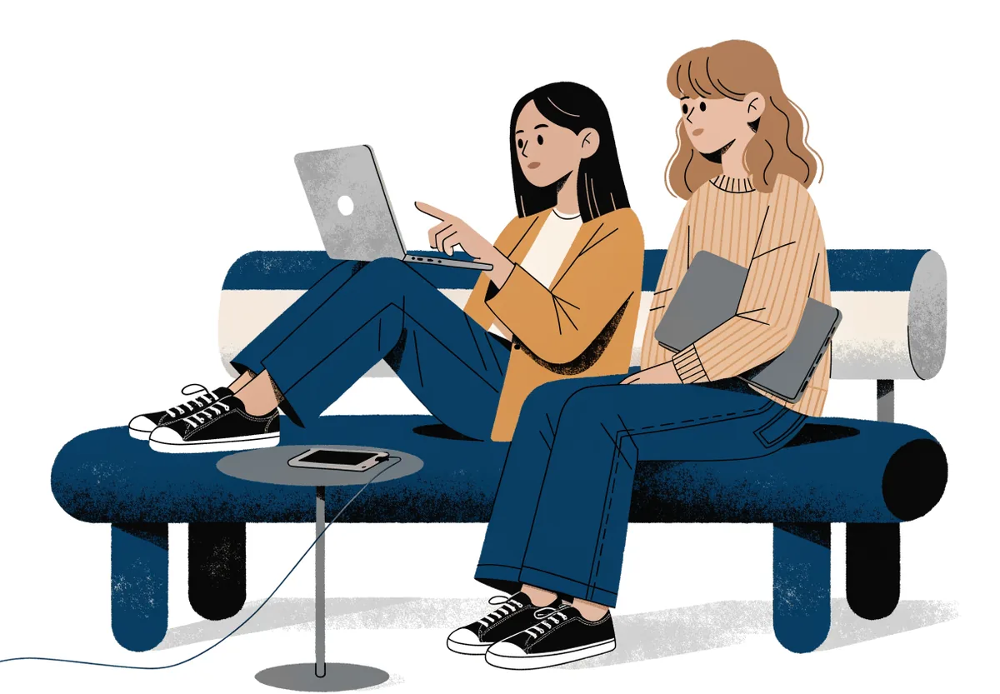
큰돈이 드는 물건을 살 때는 여러 가지를 비교해 보고 골라요. 그리고 산 물건이 고장 났거나 주문과 다른 것이 오면 바꾸거나 돈을 돌려받아야 해요. 이 과에서는 비교하는 말과 형용사 끝을 배우고, 정중하지만 분명하게 불만을 말하는 법을 익혀요.
문법 Komparativ und Superlativ, Adjektive nach ein, kein, mein (Nominativ, Akkusativ, Dativ)
과제대학온라인으로 산 노트북을 반품하는 메일 쓰기
과제직장잘못 온 주문품을 전화로 항의하기
이 과를 마치면 물건을 비교해서 고르고, 교환과 환불을 요청하고, 불만을 말할 수 있어요.
이 과에서 쓸 말이에요.
배우기 전에 먼저 해 보세요. 틀려도 괜찮아요.
billiger는 무슨 뜻일까요?
형용사에 -er을 붙이면 '더 ~한'이 돼요.
가게에서 산 물건에 문제가 있을 때 하는 말은 무엇일까요?
reklamieren은 문제를 알리고 바꿔 달라고 하는 것이에요.
Lektion 5의 낱말 다섯 개를 다시 떠올려 보세요.
12월의 저녁, WG 거실이에요. Jiu는 봄부터 대학에 다닐 예정이라 새 노트북을 사려고 해요.
들으면서 찾아보세요. Jiu에게 가장 중요한 것은 무엇인가요?
화요일 아침, 사무실이에요. 회사에서 주문한 물건이 잘못 왔어요. Dohyun이 사무용품 가게의 고객 센터에 전화해요.
들으면서 찾아보세요. 무엇이 잘못 왔나요?
토요일 오전, 가전제품 가게예요. Sora가 지난주에 산 전기 주전자를 들고 왔어요.
들으면서 찾아보세요. Sora는 돈을 돌려받나요?
세 대화를 듣고 답하세요.
어느 노트북이 더 가벼운가요?
Jiu에게 가장 중요한 것은 무엇인가요?
Jiu braucht eine neue Tasche für den Laptop.
예전 가방이 아직 있어요.
Dohyun의 회사에는 무엇이 잘못 왔나요?
Kessler Technik muss für den Fehler zahlen.
가게의 잘못이라서 낼 돈이 없어요.
맞는 물건은 언제 오나요?
Sora의 전기 주전자는 무엇이 문제인가요?
Sora bekommt ihr Geld zurück.
10유로를 더 내고 새 모델을 가져가요.
낱말 50개예요. 명사는 der, die, das를 색으로 구분했어요.
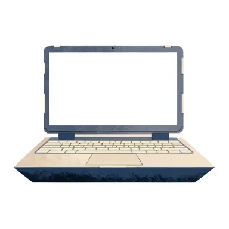
der Laptop, die Laptops 노트북
Ich brauche einen neuen Laptop.새 노트북이 필요해요.
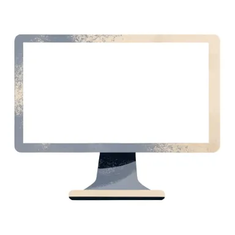
der Bildschirm, die Bildschirme 화면, 모니터
Der Bildschirm ist groß.화면이 커요.
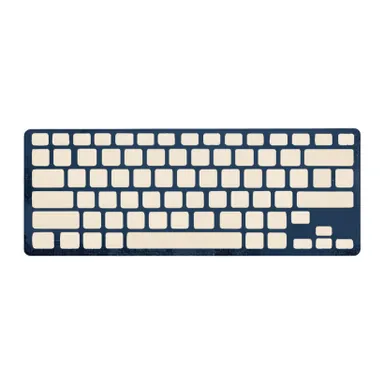
die Tastatur, die Tastaturen 자판
Die Tastatur ist neu.자판은 새것이에요.
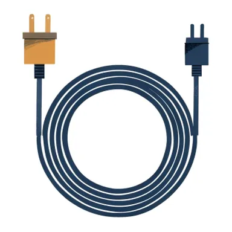
das Ladekabel, die Ladekabel 충전선
Wo ist mein Ladekabel?제 충전선이 어디 있어요?
der Akku, die Akkus 배터리
Der Akku ist leer.배터리가 다 됐어요.
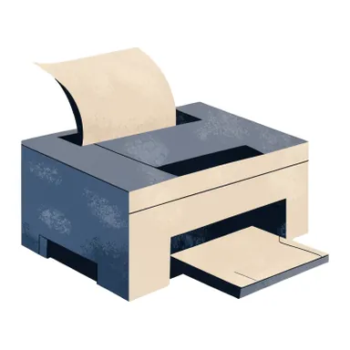
der Drucker, die Drucker 프린터
Der Drucker ist kaputt.프린터가 고장 났어요.
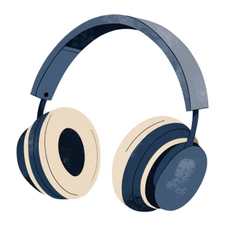
der Kopfhörer, die Kopfhörer 헤드폰, 이어폰
Ich höre Musik mit Kopfhörern.저는 헤드폰으로 음악을 들어요.
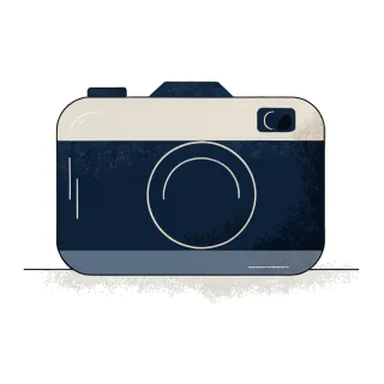
die Kamera, die Kameras 카메라
Die Kamera ist klein und leicht.그 카메라는 작고 가벼워요.
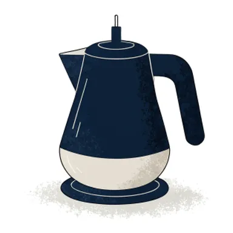
der Wasserkocher, die Wasserkocher 전기 주전자
Der Wasserkocher funktioniert nicht.전기 주전자가 작동하지 않아요.
das Gerät, die Geräte 기기, 기계
Das Gerät ist ganz neu.그 기기는 아주 새것이에요.
das Modell, die Modelle 모델
Dieses Modell ist besser.이 모델이 더 좋아요.
die Marke, die Marken 상표, 브랜드
Welche Marke ist das?어느 상표예요?
die Qualität 품질
Die Qualität ist sehr gut.품질이 아주 좋아요.
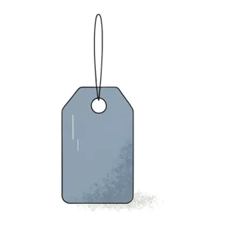
der Preis, die Preise 값, 가격
Der Preis ist zu hoch.값이 너무 비싸요.
die Garantie, die Garantien 보증
Das Gerät hat zwei Jahre Garantie.그 기기는 보증 기간이 2년이에요.
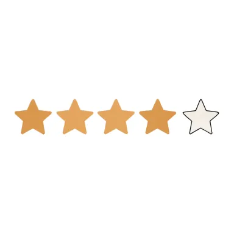
die Bewertung, die Bewertungen (상품) 후기, 평가
Ich lese zuerst die Bewertungen.저는 먼저 후기를 읽어요.
vergleichen (hat verglichen) 비교하다
Ich vergleiche zwei Modelle.저는 두 모델을 비교해요.
billig 싼
Das Kabel ist billig.그 선은 싸요.
leicht 가벼운, 쉬운
Der Laptop ist sehr leicht.그 노트북은 아주 가벼워요.
modern 요즘 것인, 현대적인
Das Gerät ist modern.그 기기는 요즘 것이에요.
praktisch 쓰기 편한
Die Tasche ist praktisch.그 가방은 쓰기 편해요.
leer 빈, 다 쓴
Die Flasche ist leer.병이 비었어요.
besser 더 좋은
Welches Handy ist besser?어느 휴대폰이 더 좋아요?
am besten 가장 좋은, 가장 잘
Welcher Laptop ist am besten?어느 노트북이 가장 좋아요?
mehr 더, 더 많이
Der Laptop kostet hundert Euro mehr.그 노트북은 100유로 더 비싸요.
lieber 더 즐겨, 차라리
Ich kaufe lieber im Geschäft.저는 가게에서 사는 게 더 좋아요.
am liebsten 가장 즐겨
Am liebsten kaufe ich online.저는 인터넷으로 사는 걸 가장 좋아해요.
als ~보다
Der Laptop ist leichter als mein Rucksack.그 노트북은 제 배낭보다 가벼워요.
genauso … wie ~만큼
Das Handy ist genauso teuer wie der Laptop.그 휴대폰은 노트북만큼 비싸요.
der Unterschied, die Unterschiede 차이
Was ist der Unterschied?차이가 뭐예요?
der Vorteil, die Vorteile 좋은 점
Der Preis ist ein Vorteil.값이 좋은 점이에요.
der Nachteil, die Nachteile 나쁜 점
Der Akku ist klein. Das ist ein Nachteil.배터리가 작아요. 그게 나쁜 점이에요.
zufrieden 만족한
Ich bin sehr zufrieden.저는 아주 만족해요.
reklamieren (hat reklamiert) (산 물건의) 문제를 알리다
Ich möchte den Wasserkocher reklamieren.이 전기 주전자에 문제가 있어서 왔어요.
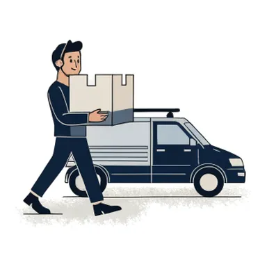
die Lieferung, die Lieferungen 배송, 배송된 물건
Die Lieferung ist falsch.배송이 잘못됐어요.
liefern (hat geliefert) 배송하다
Wann liefern Sie den Drucker?프린터는 언제 배송하세요?
die Bestellung, die Bestellungen 주문
Meine Bestellung ist noch nicht da.제가 주문한 것이 아직 안 왔어요.
die Bestellnummer, die Bestellnummern 주문 번호
Haben Sie die Bestellnummer?주문 번호가 있으세요?
der Kundenservice 고객 센터
Ich rufe den Kundenservice an.고객 센터에 전화할게요.
zurückschicken (hat zurückgeschickt) 돌려보내다
Ich schicke den Laptop zurück.노트북을 돌려보낼 거예요.
zurückgeben (du gibst zurück, hat zurückgegeben) 돌려주다, 반품하다
Kann ich die Schuhe zurückgeben?이 신발을 반품할 수 있어요?
zurückbekommen (hat zurückbekommen) 돌려받다
Ich möchte mein Geld zurückbekommen.돈을 돌려받고 싶어요.
falsch 틀린, 잘못된
Die Farbe ist falsch.색이 잘못 왔어요.
richtig 맞는, 올바른
Ist die Adresse richtig?주소가 맞아요?
der Fehler, die Fehler 실수, 잘못
Das ist unser Fehler.저희 잘못입니다.
bestätigen (hat bestätigt) 확인해 주다
Können Sie das per E-Mail bestätigen?메일로 확인해 주실 수 있나요?
sich beschweren (hat sich beschwert) 불만을 말하다, 항의하다
Ich möchte mich beschweren.불만을 말씀드리고 싶어요.
ärgerlich 속상한, 짜증 나는
Das ist wirklich ärgerlich.정말 속상하네요.
Entschuldigen Sie bitte. 죄송합니다.
Entschuldigen Sie bitte, das war unser Fehler.죄송합니다, 저희 잘못이었습니다.
per E-Mail 메일로
Ich schicke Ihnen die Rechnung per E-Mail.계산서를 메일로 보내 드릴게요.
이 과의 낱말로 여덟 문제를 풀어요.
자주 쓰는 네 낱말은 비교할 때 모양이 달라져요.
규칙
둘을 비교할 때는 형용사에 -er을 붙여요. '~보다'는 als예요. 짧은 형용사는 a, o, u가 ä, ö, ü로 바뀌는 일이 많아요. 몇몇 낱말은 모양이 아주 달라져요.
| 형용사 | 더 ~한 |
|---|---|
| billig | billiger |
| leicht | leichter |
| groß | größer |
| alt | älter |
| teuer | teurer |
| gut | besser |
| viel | mehr |
| gern | lieber |
주의 영어처럼 mehr를 앞에 붙이지 않아요. mehr schön이 아니라 schöner예요. 둘이 같을 때는 genauso … wie를 써요. Das Handy ist genauso teuer wie der Laptop.
규칙을 보고 바로 확인해 보세요.
Der Bildschirm ist … als bei meinem Handy. 빈칸에 알맞은 말은 무엇인가요?
규칙
여럿 가운데 으뜸을 말할 때는 am과 -sten을 써요. t, d, ß, z로 끝나는 형용사는 -esten을 붙여요. Komparativ에서 모음이 바뀐 낱말은 여기서도 바뀌어요.
| 형용사 | 더 ~한 | 가장 ~한 |
|---|---|---|
| billig | billiger | am billigsten |
| leicht | leichter | am leichtesten |
| groß | größer | am größten |
| gut | besser | am besten |
| viel | mehr | am meisten |
| gern | lieber | am liebsten |
주의 좋아하는 것을 말할 때 gern, lieber, am liebsten을 써요. Ich trinke gern Tee. Ich trinke lieber Kaffee. Am liebsten trinke ich Wasser.
규칙을 보고 바로 확인해 보세요.
Dieses Modell ist am … 빈칸에 알맞은 말은 무엇인가요?
규칙
형용사가 명사 앞에 오면 끝이 붙어요. ein, kein, mein 뒤에서는 명사가 der, das, die 가운데 무엇인지를 형용사 끝이 보여 줘요. der는 -er, das는 -es, die는 -e예요. Akkusativ에서는 der 명사만 -en으로 바뀌어요.
| 명사 | Nominativ | Akkusativ |
|---|---|---|
| der | ein neuer | einen neuen |
| das | ein neues | ein neues |
| die | eine neue | eine neue |
| 여럿 | meine neuen | meine neuen |
주의 sein 뒤에 형용사만 올 때는 끝이 붙지 않아요. Der Laptop ist neu. 명사 앞에 올 때만 붙어요. Das ist ein neuer Laptop. 여럿일 때는 keine, meine 뒤에서 늘 -en이에요. Meine neuen Kopfhörer sind leicht.
규칙을 보고 바로 확인해 보세요.
Wir haben einen … Drucker bestellt. 빈칸에 알맞은 말은 무엇인가요?
규칙
Dativ에서는 형용사 끝이 늘 -en이에요. 명사가 der, das, die 가운데 무엇이든, 여럿이든 같아요. 관사가 einem, einer, meinen으로 바뀌고 형용사는 -en으로 끝나요.
| 명사 | Dativ |
|---|---|
| der | mit einem neuen Laptop |
| das | mit einem neuen Handy |
| die | mit einer neuen Tasche |
| 여럿 | mit meinen neuen Schuhen |
주의 헷갈릴 때는 이렇게 기억하세요. ein 뒤의 der 명사는 -er, das 명사는 -es, die 명사는 -e이고, 나머지는 모두 -en이에요.
규칙을 보고 바로 확인해 보세요.
Jiu geht mit ihren … Kopfhörern zur Uni. 빈칸에 알맞은 말은 무엇인가요?
듣고 알맞은 것을 고르세요.
750유로짜리 노트북은 어떤가요?
Der Laptop für siebenhundertfünfzig Euro ist leichter und schneller.
Lena는 어디에서 사는 것을 가장 좋아하나요?
Am liebsten kaufe ich im Geschäft, nicht online.
무엇이 문제인가요?
Wir haben einen großen Drucker bestellt, aber Sie haben uns einen kleinen geschickt.
Sora는 무엇을 원하나요?
Ich möchte den Wasserkocher zurückgeben und mein Geld zurückbekommen.
가게 점원이 휴대폰 두 가지를 견주어 말해요. 듣고 알맞은 것을 고르세요.
Zwei Handys
Verkäufer Hier haben wir zwei Handys. Das erste kostet zweihundertfünfzig Euro, das zweite vierhundert.
Verkäufer Das erste ist billiger und leichter. Der Akku ist aber kleiner.
Verkäufer Beim zweiten ist die Kamera besser, und der Bildschirm ist größer.
Verkäufer Für Fotos ist das zweite Handy am besten. Aber viele Kunden kaufen das erste, weil es günstiger ist.
첫 번째 휴대폰은 얼마인가요?
Welches Handy ist leichter?
사진을 찍기에는 어느 것이 가장 좋은가요?
인터넷 가게에 올라온 노트북 후기예요. 읽고, 맞으면 richtig, 틀리면 falsch를 고르세요.
Bewertungen
5 von 5 Sternen: Sehr zufrieden!
Der Laptop ist leicht und schnell. Ich arbeite acht Stunden ohne Ladekabel. Für die Uni ist er am besten. (Mia)
3 von 5 Sternen: Gut, aber laut
Der Bildschirm ist schön groß, aber das Gerät ist lauter als mein alter Laptop. Die Lieferung war schnell. (Tom)
1 von 5 Sternen: Leider kaputt
Der Laptop war schon bei der Lieferung kaputt. Ich habe ihn zurückgeschickt und mein Geld zurückbekommen. Der Kundenservice war aber sehr nett. (Ali)
Mia findet den Laptop gut für die Uni.
Tom findet, dass der Laptop leise ist.
예전 노트북보다 시끄럽다고 썼어요.
Bei Tom ist die Lieferung schnell gekommen.
Ali hat einen neuen Laptop bekommen.
돌려보내고 돈을 돌려받았어요.
Ali war mit dem Kundenservice zufrieden.
둘을 비교해요. 알맞은 말을 고르세요.
Dieser Laptop ist als mein alter Laptop.
이 노트북은 제 예전 노트북보다 가벼워요.
Das zweite Handy ist als das erste.
두 번째 휴대폰이 첫 번째보다 비싸요.
Der Bildschirm ist als bei meinem Handy.
화면이 제 휴대폰보다 커요.
Online ist es oft als im Geschäft.
인터넷이 가게보다 쌀 때가 많아요.
Dieses Modell ist als dein Modell.
이 모델이 당신 것보다 좋아요.
Ich kaufe im Geschäft als online.
저는 인터넷보다 가게에서 사는 게 좋아요.
가장 ~한 것을 말해요. 알맞은 말을 고르세요.
Welches Handy ist am ?
어느 휴대폰이 가장 좋아요?
Dieser Laptop ist am .
이 노트북이 가장 가벼워요.
Im Angebot ist es am .
할인할 때가 가장 싸요.
Was ist für dich am ?
당신에게는 무엇이 가장 중요해요?
Am kaufe ich online.
저는 인터넷으로 사는 걸 가장 좋아해요.
형용사의 알맞은 끝을 고르세요.
Das ist ein Laptop.
이것은 새 노트북이에요.
Ich brauche einen Laptop.
새 노트북이 필요해요.
Sora kauft ein Modell.
Sora는 새 모델을 사요.
Ich habe eine Tasche.
저는 오래된 가방이 있어요.
Wir haben einen Drucker bestellt.
우리는 큰 프린터를 주문했어요.
Das ist kein Preis.
그건 좋은 값이 아니에요.
Meine Kopfhörer sind sehr leicht.
제 새 헤드폰은 아주 가벼워요.
Dativ예요. 형용사의 알맞은 끝을 고르세요.
Ich arbeite mit einem Laptop.
저는 새 노트북으로 일해요.
Sie telefoniert mit einer Verkäuferin.
그 사람은 친절한 점원과 통화해요.
Ich bin mit meinem Handy zufrieden.
저는 예전 휴대폰에 만족해요.
Jiu geht mit ihren Kopfhörern zur Uni.
Jiu는 새 헤드폰을 끼고 학교에 가요.
낱말을 순서대로 눌러 문장을 만드세요.
이 노트북은 제 배낭보다 가벼워요.
어느 모델이 가장 좋아요?
노트북을 돌려보내고 싶어요.
우리는 큰 프린터를 주문했어요.
뜻이 반대인 말을 짝지으세요.
빈칸에 알맞은 낱말을 쓰세요.
Der Laptop hat zwei Jahre .
그 노트북은 보증 기간이 2년이에요.
Die Lieferung ist . Wir haben einen großen Drucker bestellt.
배송이 잘못됐어요. 우리는 큰 프린터를 주문했어요.
Ich schicke das Gerät zurück und möchte mein Geld .
기기를 돌려보내고 돈을 돌려받고 싶어요.
Was ist der zwischen den zwei Modellen?
두 모델의 차이가 뭐예요?
듣고 그대로 써 보세요.
음성 준비 중Dieser Laptop ist leichter. 이 노트북이 더 가벼워요.
음성 준비 중Die Lieferung ist falsch. 배송이 잘못됐어요.
음성 준비 중Ich möchte mein Geld zurück. 돈을 돌려받고 싶어요.
Dieser Laptop ist leichter als mein alter Laptop. 이 노트북은 제 예전 노트북보다 가벼워요.
Welches Modell ist am besten? 어느 모델이 가장 좋아요?
Das Handy ist genauso teuer wie der Laptop. 그 휴대폰은 노트북만큼 비싸요.
Was ist der Unterschied? 차이가 뭐예요?
Ich nehme lieber dieses Modell. 저는 이 모델이 더 좋아요.
Am wichtigsten ist für mich der Preis. 저한테는 값이 가장 중요해요.
Ich brauche einen leichten Laptop. 가벼운 노트북이 필요해요.
Das Gerät funktioniert nicht. 기기가 작동하지 않아요.
Die Lieferung ist falsch. 배송이 잘못됐어요.
Wir haben einen großen Drucker bestellt, aber wir haben einen kleinen bekommen. 큰 프린터를 주문했는데 작은 것이 왔어요.
Der Bildschirm ist kaputt. 화면이 고장 났어요.
Ich möchte das Gerät zurückgeben. 기기를 반품하고 싶어요.
Ich möchte mein Geld zurückbekommen. 돈을 돌려받고 싶어요.
Können Sie mir ein neues Gerät schicken? 새 기기를 보내 주실 수 있나요?
Können Sie das per E-Mail bestätigen? 메일로 확인해 주실 수 있나요?
Das ist wirklich ärgerlich. 정말 속상하네요.
Ich möchte mich beschweren. 불만을 말씀드리고 싶어요.
Entschuldigen Sie bitte, das war unser Fehler. 죄송합니다, 저희 잘못이었습니다.
Das tut mir leid. 죄송합니다.
과제 고르기
역할 대화와 말하기, 쓰기 과제는 대학 생활과 직장 생활 두 가지예요. 하나를 고르면 다음 과에서도 그쪽 과제가 나와요. 언제든 바꿀 수 있어요.
대화 A에서 역할을 하나 고르세요. 상대의 말은 글로 읽고, 내 차례에는 직접 말해요.
대화 B에서 역할을 하나 고르세요. 상대의 말은 글로 읽고, 내 차례에는 직접 말해요.
내가 날마다 쓰는 기기를 떠올리고 칸을 채우세요. 완성된 문장을 소리 내어 읽어 보세요.
Ich brauche jeden Tag mein Handy.
Das Gerät ist leicht und schnell.
Aber es gibt einen Nachteil: Der Akku ist schnell leer.
Bald möchte ich einen neuen Laptop kaufen.
인터넷 가게에서 노트북을 샀어요. 그런데 자판이 잘 눌리지 않고 배터리도 금방 닳아요. 받은 지 닷새 됐어요. 돌려보내고 돈을 돌려받으려고 해요. 같이 사는 Lena가 물어요.
주문 번호는 58213이에요. 12월 3일에 받았어요. 다음에는 가게에서 직접 보고 가벼운 노트북을 사려고 해요.
같이 사는 Lena가 새 노트북에 대해 물어요. 쪽지를 보고 답하세요. 질문을 듣고 소리 내어 답한 뒤 예시 답과 비교해 보세요.
Du hast doch einen neuen Laptop, oder? Bist du zufrieden? 새 노트북 샀잖아요? 마음에 들어요?
Nein, leider nicht. Die Tastatur funktioniert nicht richtig.
Oh nein. Ist das alles? 저런. 그게 다예요?
Nein. Der Akku ist auch sehr schnell leer.
Was machst du jetzt? 이제 어떻게 할 거예요?
Ich schicke ihn zurück. Ich möchte mein Geld zurückbekommen.
Geht das noch? 아직 그게 돼요?
Ja. Ich habe ihn vor fünf Tagen bekommen, und ich habe vierzehn Tage Zeit.
Und dann? Kaufst du einen neuen Laptop? 그다음에는요? 새 노트북을 사요?
Ja, aber ich kaufe lieber im Geschäft. Ich brauche einen leichten Laptop.
Eine E-Mail an den Online-Shop
인터넷 가게에 노트북을 돌려보내겠다는 메일을 써 보세요. 여섯 문장이면 충분해요.
Sehr geehrte Damen und Herren, am 3. Dezember habe ich von Ihnen einen Laptop bekommen. Die Bestellnummer ist 58213. Leider funktioniert die Tastatur nicht richtig, und der Akku ist sehr schnell leer. Ich möchte den Laptop zurückschicken und mein Geld zurückbekommen. Können Sie mir sagen, wie ich das Paket zurückschicken kann? Bitte bestätigen Sie mir das per E-Mail. Mit freundlichen Grüßen, Minji Choi
다 쓴 뒤에 확인해 보세요.
회사에서 사무용 가구 가게에 큰 책상 하나와 의자 네 개를 주문했어요. 오늘 물건이 왔는데 작은 책상이 왔고 의자는 세 개뿐이에요. 고객 센터에 전화해요.
주문 번호는 3391이에요. 월요일에 새 동료가 와서 금요일까지 물건이 필요해요. 통화한 내용을 메일로 확인받으려고 해요.
가구 가게의 고객 센터와 통화해요. 쪽지를 보고 답하세요. 질문을 듣고 소리 내어 답한 뒤 예시 답과 비교해 보세요.
Kundenservice, guten Tag. Was kann ich für Sie tun? 고객 센터입니다, 안녕하세요. 무엇을 도와드릴까요?
Guten Tag, hier ist Minji Choi von der Firma Kessler Technik. Ich möchte eine Lieferung reklamieren.
Das tut mir leid. Haben Sie die Bestellnummer? 죄송합니다. 주문 번호가 있으세요?
Ja, die Nummer ist 3391.
Was ist das Problem? 무엇이 문제인가요?
Wir haben einen großen Tisch bestellt, aber wir haben einen kleinen Tisch bekommen. Und ein Stuhl fehlt.
Entschuldigen Sie bitte, das ist unser Fehler. Bis wann brauchen Sie die Möbel? 죄송합니다, 저희 잘못입니다. 가구가 언제까지 필요하세요?
Wir brauchen sie bis Freitag, weil am Montag ein neuer Kollege kommt.
Gut, wir liefern am Donnerstag. 알겠습니다, 목요일에 배송하겠습니다.
Vielen Dank. Können Sie mir das bitte per E-Mail bestätigen?
Eine Reklamation per E-Mail
통화한 내용을 가게에 메일로도 남겨 보세요. 여섯 문장이면 충분해요.
Sehr geehrte Damen und Herren, heute haben wir Ihre Lieferung bekommen. Die Bestellnummer ist 3391. Leider ist die Lieferung falsch: Wir haben einen großen Tisch bestellt, aber Sie haben uns einen kleinen Tisch geschickt. Ein Stuhl fehlt auch. Bitte liefern Sie uns den Tisch und den Stuhl bis Freitag. Können Sie mir auch sagen, wann Ihr Fahrer den kleinen Tisch abholt? Mit freundlichen Grüßen, Minji Choi
다 쓴 뒤에 확인해 보세요.
Ich kann Produkte vergleichen und sagen, was ich besser finde.물건을 비교하고 무엇이 더 좋은지 말할 수 있어요.
Ich kann sagen, was für mich am wichtigsten ist.나에게 무엇이 가장 중요한지 말할 수 있어요.
Ich kann ein Problem mit einem Produkt beschreiben und etwas zurückgeben.물건의 문제를 설명하고 반품할 수 있어요.
Ich kann mich höflich beschweren und sagen, was ich möchte.정중하게 불만을 말하고 원하는 것을 말할 수 있어요.